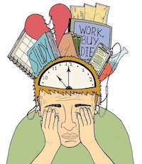

Time Management

Create a Schedule
Planning your day helps you stay organized and reduces stress. Use a planner or digital calendar to map out your classes, assignments, and personal time. Sticking to a schedule helps you stay disciplined and manage your time better.
Prioritize Tasks
Focus on what is most important first. Completing high-priority tasks early ensures that deadlines are met and prevents last-minute stress. This ensures you focus your energy on what matters most first.
Avoid Procrastination
Break large tasks into smaller steps to make them easier to start. Taking action early helps you stay consistent and reduces pressure later. Starting early makes tasks feel easier and reduces last-minute pressure.
Use Time Blocks
Allocate specific time periods for studying, relaxing, and other activities. This improves focus and helps maintain a balanced routine. Time blocking helps you stay focused and avoid multitasking
Stay Consistent
Following a routine daily helps build discipline. Consistency allows you to manage your time effectively and achieve long-term goals. Consistency builds strong habits and leads to long-term success.